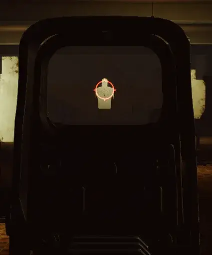

EOTech Fix
- Downloads
- 10,580
- Favourites
- 36
- Mod lists
- 72
NOTE: If you are using SPT-VR, you do not need this mod, it’s built into SPT-VR already
So, before I took over development on the SPT-VR mod, I noticed that a lot of sights, mainly EOTech Holo sights, have an accuracy issue. Something a lot of people have always thought but as far as I know, no one was ever able to fully confirm. Well the VR mod made it VERY apparent. Me and the original dev looked at the material values and I noticed MarkScale, suggested he set it to 1 and use MarkShift to adjust the crosshair instead and what do ya know? It fixed it.
Basically, the issue with EOTech’s and other sights with accuracy issues, appears to be due to a value on the collimator sight material called “_MarkScale”. I assume BSG uses this value to adjust the size of the crosshair on the sight, the problem is that scaling the crosshair this way results in broken accuracy unless you’re looking directly down the middle of the sight.
This mod basically forces MarkScale value to 1 and changes another material value called “MarkShift” to adjust the crosshair back to the correct position.
After having this in the VR mod for a while, I figured I might as well release it as a separate mod because I know I’ve heard a lot of people bring up accuracy issues with these sights on flatscreen too. I imagine this would do wonders for people that use mods that significantly changes gun handling and gun view model.
I am not sure if this has compatibility issues with any other mods, if it does, please let me know.
You can support my work on ko-fi: https://ko-fi.com/matsix
Version
1.0.2
Just fixes the version number in the mod so that mod managers don’t see it as outdated
Version
1.0.1
- Just an adjustment to the zip directory to be “plugins” instead of “Plugins” for linux users
- Also removed small part of code that was left over from a different mod of mine (it had no effect on anything it was just a value)
Version
1.0.0
First release, check description for what this mod does